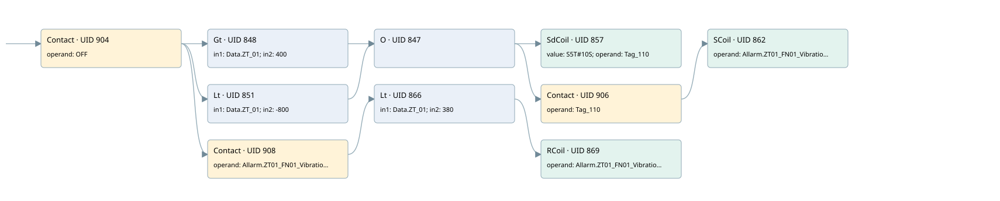

high vibrations fn-01
allarms 3 · 검색 색인 순서 10 · 원본 내부 NID 추정 10
백업 PLF 원본의 3175515 바이트 위치에서 복원한 XML. 검색 문서 1988의 객체 키 161022007a6b000000000000와 연결했다. 이름 해석 13/13개. 남은 RefId는 상수 또는 미해석 참조다.
연결 구조 다시 그리기
원본 Part/PCon/Wire를 이용한 연결도다. TIA 화면의 래더 배치 또는 실행 결과를 재현한 그림은 아니다. 핀 연결은 아래 표와 원본 XML을 기준으로 읽는다. 노드 위에 마우스를 두면 피연산자 이름을 볼 수 있다.

접점·코일·블록과 피연산자
| Part UID | Gate | Negated 핀 | 연결 피연산자 |
|---|---|---|---|
| 904 | Contact | operand = OFF | |
| 848 | Gt | in1 = Data.ZT_01; in2 = 400 | |
| 851 | Lt | in1 = Data.ZT_01; in2 = -800 | |
| 847 | O | ||
| 857 | SdCoil | value = S5T#10S; operand = Tag_110 | |
| 906 | Contact | operand = Tag_110 | |
| 862 | SCoil | operand = Allarm.ZT01_FN01_Vibration | |
| 908 | Contact | operand = Allarm.ZT01_FN01_Vibration | |
| 866 | Lt | in1 = Data.ZT_01; in2 = 380 | |
| 869 | RCoil | operand = Allarm.ZT01_FN01_Vibration |
접점 경로를 펼친 조건식
Contact·O/A·비교기의 원본 연결을 읽기 쉽게 펼친 보조 해석이다. POWER는 전원 레일 시작을 뜻한다. 호출 블록·에지·타이머의 내부 동작과 다중 쓰기 순서는 이 표로 실행 검증하지 않았다. 미해석 핀과 RefId는 원문 연결표에서 확인한다.
| UID | 동작 | 대상 | 원본 접점 경로 | 내용 |
|---|---|---|---|---|
| 857 | SdCoil | Tag_110 | ((OFF AND [Data.ZT_01 > 400]) OR (OFF AND [Data.ZT_01 < -800])) | 시간 동작 SdCoil; 타이머 의미 추가 확인 / 시간 인자 S5T#10S |
| 862 | SCoil | Allarm.ZT01_FN01_Vibration | (((OFF AND [Data.ZT_01 > 400]) OR (OFF AND [Data.ZT_01 < -800])) AND Tag_110) | 조건 성립 시 Set |
| 869 | RCoil | Allarm.ZT01_FN01_Vibration | ((OFF AND Allarm.ZT01_FN01_Vibration) AND [Data.ZT_01 < 380]) | 조건 성립 시 Reset |
원본 배선 연결
| Wire UID | 동일 Wire 연결 끝점 |
|---|---|
| 910 | Powerrail {} ↔ Part 904.in |
| 883 | ORef 870 (OFF) ↔ Part 904.operand |
| 905 | Part 904.out ↔ Part 848.pre ↔ Part 851.pre ↔ Part 908.in |
| 884 | ORef 871 (Data.ZT_01) ↔ Part 848.in1 |
| 885 | ORef 872 (400) ↔ Part 848.in2 |
| 886 | Part 848.out ↔ Part 847.in1 |
| 887 | ORef 873 (Data.ZT_01) ↔ Part 851.in1 |
| 888 | ORef 874 (-800) ↔ Part 851.in2 |
| 889 | Part 851.out ↔ Part 847.in2 |
| 890 | Part 847.out ↔ Part 857.in ↔ Part 906.in |
| 891 | ORef 875 (S5T#10S) ↔ Part 857.value |
| 892 | ORef 876 (Tag_110) ↔ Part 857.operand |
| 893 | ORef 877 (Tag_110) ↔ Part 906.operand |
| 907 | Part 906.out ↔ Part 862.in |
| 895 | ORef 878 (Allarm.ZT01_FN01_Vibration) ↔ Part 862.operand |
| 897 | ORef 879 (Allarm.ZT01_FN01_Vibration) ↔ Part 908.operand |
| 909 | Part 908.out ↔ Part 866.pre |
| 898 | ORef 880 (Data.ZT_01) ↔ Part 866.in1 |
| 899 | ORef 881 (380) ↔ Part 866.in2 |
| 900 | Part 866.out ↔ Part 869.in |
| 902 | ORef 882 (Allarm.ZT01_FN01_Vibration) ↔ Part 869.operand |
식별자 해석 근거 13개
| ORef UID | RefId | 이름 | IdentXmlPart 파일 | 해석 방법 |
|---|---|---|---|---|
| 870 | 176 | OFF | 0686-IdentXmlPart.xml | UID/RID + search-text + NID agreement |
| 871 | 89 | Data.ZT_01 | 0684-IdentXmlPart.xml | UID/RID + search-text + NID agreement |
| 872 | 74 | 400 | 0683-IdentXmlPart.xml | literal candidate: UID/RID/NID + nearby named declarations + search-text agreement |
| 873 | 89 | Data.ZT_01 | 0684-IdentXmlPart.xml | UID/RID + search-text + NID agreement |
| 874 | 85 | -800 | 0683-IdentXmlPart.xml | literal candidate: UID/RID/NID + nearby named declarations + search-text agreement |
| 876 | 91 | Tag_110 | 0686-IdentXmlPart.xml | UID/RID + search-text + NID agreement |
| 875 | 90 | S5T#10S | 0683-IdentXmlPart.xml | literal candidate: UID/RID/NID + nearby named declarations + search-text agreement |
| 877 | 91 | Tag_110 | 0686-IdentXmlPart.xml | UID/RID + search-text + NID agreement |
| 878 | 92 | Allarm.ZT01_FN01_Vibration | 0684-IdentXmlPart.xml | UID/RID + search-text + NID agreement |
| 879 | 92 | Allarm.ZT01_FN01_Vibration | 0684-IdentXmlPart.xml | UID/RID + search-text + NID agreement |
| 880 | 89 | Data.ZT_01 | 0684-IdentXmlPart.xml | UID/RID + search-text + NID agreement |
| 881 | 93 | 380 | 0683-IdentXmlPart.xml | literal candidate: UID/RID/NID + nearby named declarations + search-text agreement |
| 882 | 92 | Allarm.ZT01_FN01_Vibration | 0684-IdentXmlPart.xml | UID/RID + search-text + NID agreement |
검색 코드 보조 자료
참조 명칭을 찾기 위한 자료이며 실행 순서나 AND/OR 관계는 위 연결표로 확인한다.
"off" "data".zt_01 400 "tag_110" s5t#10s "data".zt_01 -800 "allarm".zt01_fn01_vibration "data".zt_01 380 "allarm".zt01_fn01_vibration "tag_110" "allarm".zt01_fn01_vibration